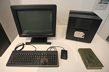
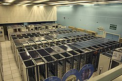

A World Wide Web (tradução em português: Rede Mundial de Computadores; em inglês: WWW, A Web) designa um sistema de documentos em hipermídia (ou
hipermédia) que são interligados e executados na Internet.
O logo histórico da WWW
Os documentos podem estar na forma de vídeos, sons, hipertextos e imagens. Para consultar a informação,
pode-se usar um programa de computador chamado navegador (como Internet Explorer, Google Chrome, Mozilla
Firefox, Microsoft Edge, Opera, etc.), para descarregar informações (chamadas "documentos" ou "páginas")
de servidores web (ou "sítios") e mostrá-los na tela do usuário. O usuário pode então seguir as
hiperligações na página para outros documentos ou mesmo enviar informações de volta para o servidor para
interagir com ele. O ato de seguir hiperligações é, comumente, chamado "navegar" ou "surfar" na Web.
História
As ideias por trás da Web podem ser identificadas ainda em 1980, no CERN (Organização Europeia para a
Investigação Nuclear), na Suíça, quando Tim Berners-Lee construiu o ENQUIRE. Ainda que diferente da Web
atual (2007), o projeto continha algumas das mesmas ideias primordiais, e também algumas ideias da Web
semântica. Seu intento original do sistema foi tornar mais fácil o compartilhamento de documentos de
pesquisas entre os colegas.

O primeiro servidor web, um NeXTcube usado por Berners-Lee no CERN
Em 1989, Tim Berners-Lee escreveu uma proposta de gerenciamento de informação, que referenciava o ENQUIRE
e descrevia um sistema de informação mais elaborado. Com a ajuda de Robert Cailliau, ele publicou uma
proposta mais formal para a World Wide Web no final de 1990.
Funcionamento
Visualizar uma página ou outro recurso disponibilizado normalmente inicia ou ao digitar uma URL no navegador ou acessando uma hiperligação.
Primeiramente, a parte da URL referente ao servidor de
rede é separada e transformada em um endereço IP, por um
banco de dados da Internet chamado Domain Name System (DNS). O navegador estabelece, então, uma conexão
TCP/IP com o
servidor web localizado no endereço IP retornado.

O datacenter da CERN em 2010 abrigando alguns servidores WWW
O próximo passo é o navegador enviar uma requisição HTTP
ao servidor para obter o recurso indicado pela parte restante da URL (retirando-se a parte do servidor). No caso de uma
página web típica, o texto em HTML é recebido e
interpretado pelo navegador, que realiza então requisições adicionais para figuras, arquivos de
formatação, arquivos de script e outros recursos que fazem parte da página.
O navegador, então, renderiza (reconstitui) a página no ecrã do utilizador, assim como descrita pelos
arquivos que a compõe.